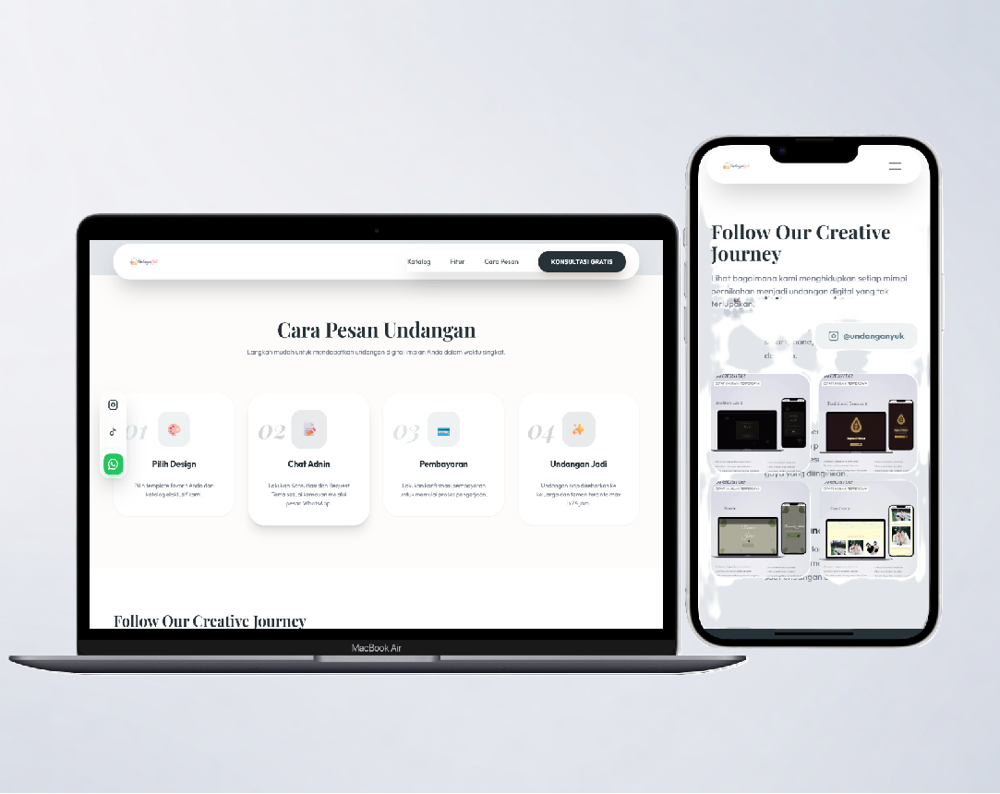
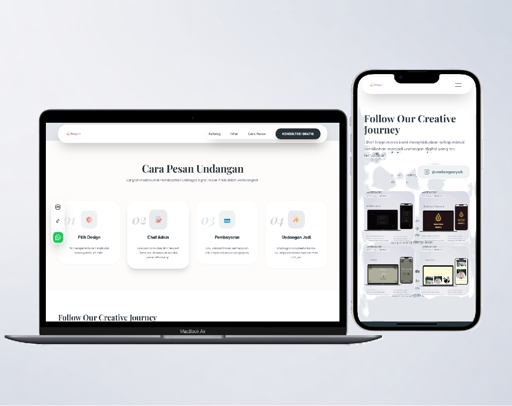
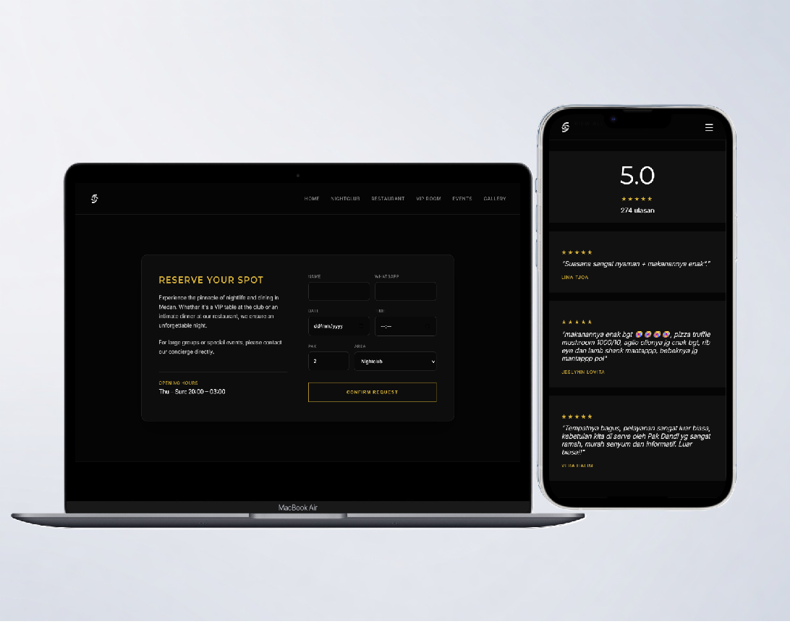
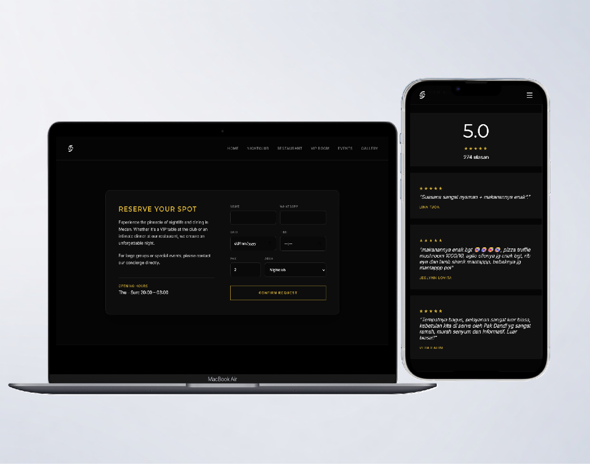

Selected Showcase.


Web Wedding Invitation
Rp.xxx /Pax- Responsive Design (Mobile, Tablet, Desktop)
- Event countdown & schedule details
- Photo gallery & love story sectionn
- Location map & RSVP integration
- Fast loading & easy sharing via link
A modern digital wedding invitation that’s elegant, interactive, and easy to share. Designed to look great on any device, your special day can be accessed anytime, anywhere.


Portofolio & Branding
Rp.xxx /Pax- Responsive Design (Mobile, Tablet, Desktop)
- Project showcase & visual gallery
- Branding-focused layout & visuals
- Smooth animations and modern UI
- Fast loading and easy navigation
- Button to direct to link sosial media or marketplaces
A clean, modern digital portfolio designed to showcase your work and strengthen your personal or business brand. Built to make a strong first impression and highlight your creativity across all devices.

DJ Portofolio & assets
Rp.xxx /Pax- Responsive Design (Mobile, Tablet, Desktop)
- Sounclound Link & Play Button
- Photo gallery & visual assets
- Show Profiles
- Smooth animations and modern UI
- Fast loading and easy navigation
- Social media & streaming platform links
A modern digital portfolio built to showcase your DJ identity, music, and creative assets in one place. Designed to help DJs stand out, get booked, and share their work easily.
 

Website Sales Landing Page
Rp.xxx /Pax- Responsive Design (Mobile, Tablet, Desktop)
- Clear headline & value proposition
- Product or service showcase
- Pricing or package sections
- Call-to-action buttons (Order, Contact, Book Now)
- Link To Social Media
- Testimonials & social proof
A high-converting landing page designed to sell your services, products, or digital solutions. Built to grab attention, build trust, and turn visitors into customers.


Business Landing Page Website
Rp.xxx /Pax- Responsive Design (Mobile, Tablet, Desktop)
- Clear business introduction & services overview
- Product or service highlights
- WhatsApp / contact button integration
- Call-to-action buttons (Order, Contact, Book Now)
- Link To Social Media
- Google Maps location integration
A professional landing page designed to promote your business clearly and effectively. Built to help customers understand your services, trust your brand, and contact you.

 

F&B Landing Page Website
Rp.xxx /Pax- Responsive Design (Mobile, Tablet, Desktop)
- Mouth-watering menu showcase with images
- Special offers & promotions section
- Easy online reservation or order buttons
- Customer reviews & social proof
- Fast loading and easy navigation
- Social media & streaming platform links
A deliciously designed landing page tailored for food & beverage businesses to attract customers and showcase their menu. Perfect for restaurants, cafés, food trucks, and catering services aiming to boost orders and bookings online.
Installation & Configuration CCTV
Rp.xxx /Pax- Setting Audio
- Setting Video
Installation & Configuration 48 CCTV IP CAM.

Installation & Configuration Mikrotik
Rp.xxx /Pax- Initial MikroTik router setup
- VLAN & Routing configuration for network segmentation
- Firewall & security rules setup
- VPN & remote access configuration (L2TP / IPsec / PPTP)
- Bandwidth management & traffic prioritization
- Network monitoring & troubleshooting
- Optimized for performance, reliability, and scalability
setup and configuration of MikroTik routers to ensure a stable, secure, and optimized network for your business or home.

Installation & Configuration Ruijie
Rp.xxx /Pax- Initial MikroTik router setup
- VLAN & Routing configuration for network segmentation
- Firewall & security rules setup
- VPN & remote access configuration (L2TP / IPsec / PPTP)
- Bandwidth management & traffic prioritization
- Network monitoring & troubleshooting
- Optimized for performance, reliability, and scalability
setup and configuration of Ruijie Networks to ensure a stable, secure, and optimized network for your business or home.